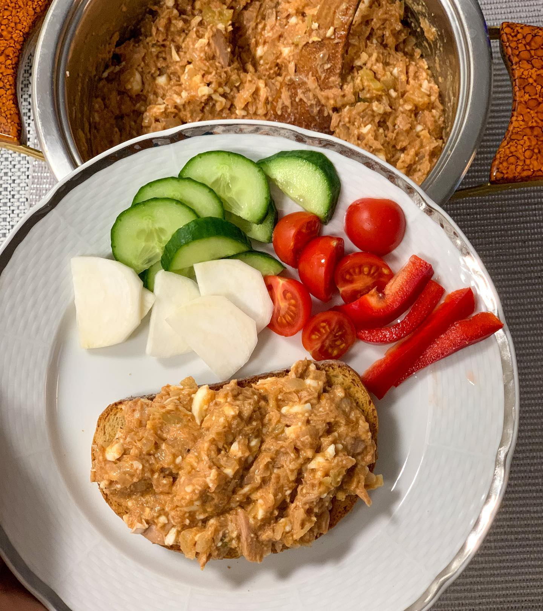

Tuniaková nátierka podľa @denisa_trenerka_premena — Normy Jedál
Jednoduchá tuniaková nátierka, vhodná na kvaskový chlebík alebo hrianku :)
Na troške oleji opražit cibuľu spolu s zelenou paprikou
2 tuniaky vo vlastnej šťave
2 vajíčka
Sol - korenie
Trošku horčice a kečupu podľa chuti :)
zamiešať a natierka je hotová 😋
Pozor zje sa rýchlo 🙃. #tuniakovanatierka #zdravéraňajky #fitnessbreakfast #fish #tuna #fitnesslifestyle #